San Diego Landscape Remodeling · Company car · Version 6 · readable from the street
The Model Y wrap
Version 5 (metallic flake green, no coachline) with three changes from the designer review: the horizontal logo, so
"San Diego Landscape Remodeling" reads about half again as big; a smaller, bolder gold site plan on the rear quarters and liftgate only;
and the gold lettering in real metallic gold vinyl. The car in these images is Gio's own 2025 Juniper Model Y.
On the street
Photo-style images made with Magnific (AI, Nano Banana Pro). They are concept images, not photos of the wrapped car.
The side and rear images were made directly from Gio's own photos of his car, so the body, lights and wheels are his.
Every word was proofread letter by letter, and the plate was painted blank. The exact artwork is in the proofs further down.
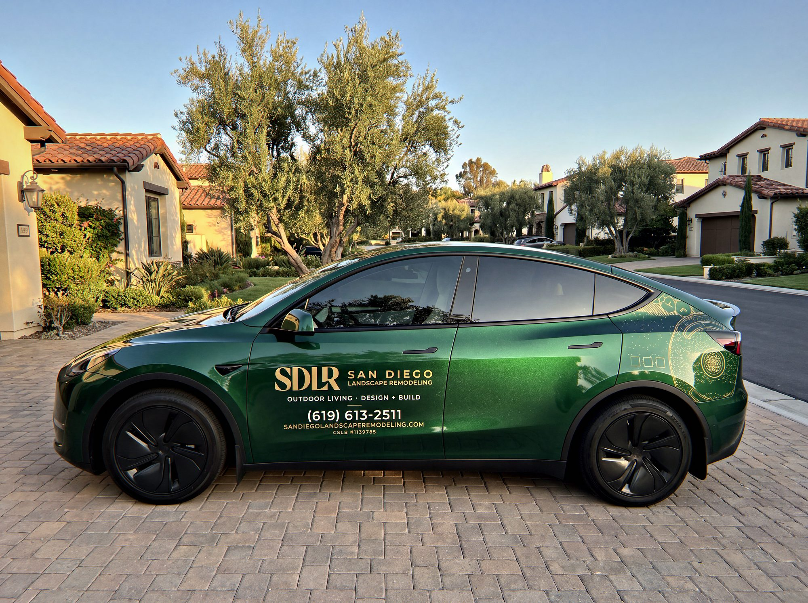
Driver side, golden hour, Rancho Santa Fe. Built from Gio's own photo of the car.
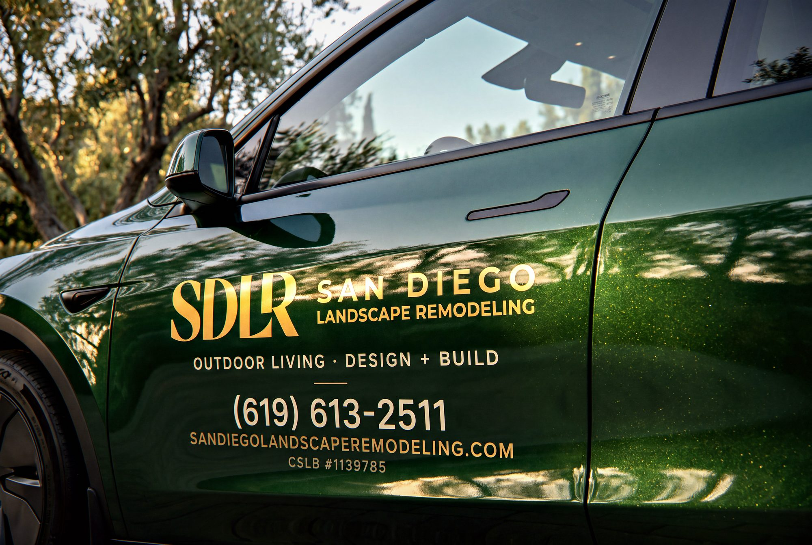
Up close: the horizontal logo in metallic gold vinyl on the flake green.
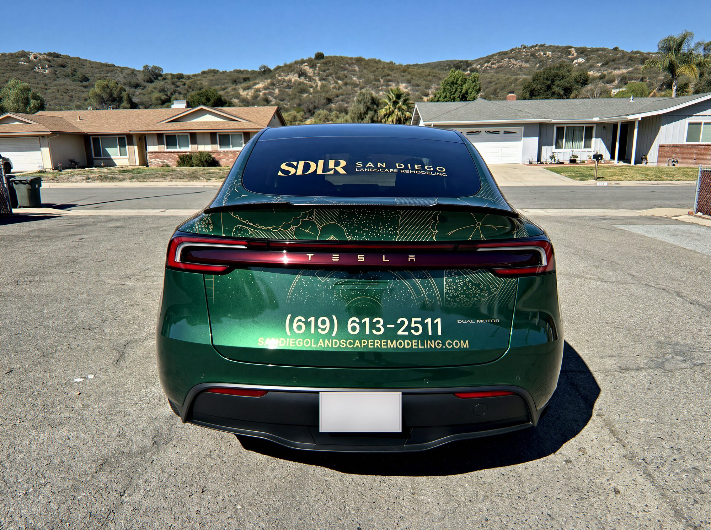
Rear, Poway: the horizontal logo on the glass and the bolder plan on the liftgate.
What changed from version 5
Horizontal logo: 37 in wide on each front door and 26 in on the rear glass. SAN DIEGO goes from about 1.2 in to 1.8 in tall,
and LANDSCAPE REMODELING from about 0.65 in to 0.96 in. Nobody knows "SDLR" yet, so the name does the work. The brand guide approves this lockup wherever height is the limit, as it is on a door.
Smaller, bolder plan: the gold site plan now covers only the rear quarters and the liftgate, with lines about twice as thick and at 90%. The rear doors are clean green.
It reads as a deliberate engraving instead of texture on top of the flake, and it shrinks the overlay film.
Metallic gold vinyl: the logo, rule and website are specified in cut metallic gold vinyl, so the gold shines like the flake instead of printing flat tan. The phone number stays cream.
The tagline and website grew slightly, from 0.9 in to 1.0 in.
On Tesla's 3D model
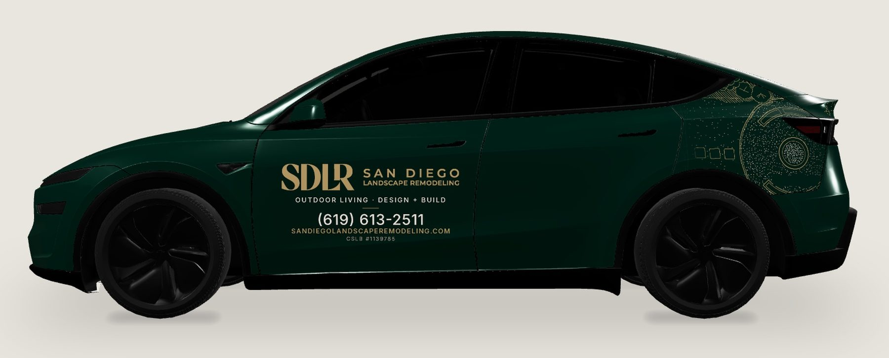
Driver side on Tesla's own 3D model of the Juniper. The mockups show the green and the gold flat; on the car the flake and the metallic gold come from the materials.
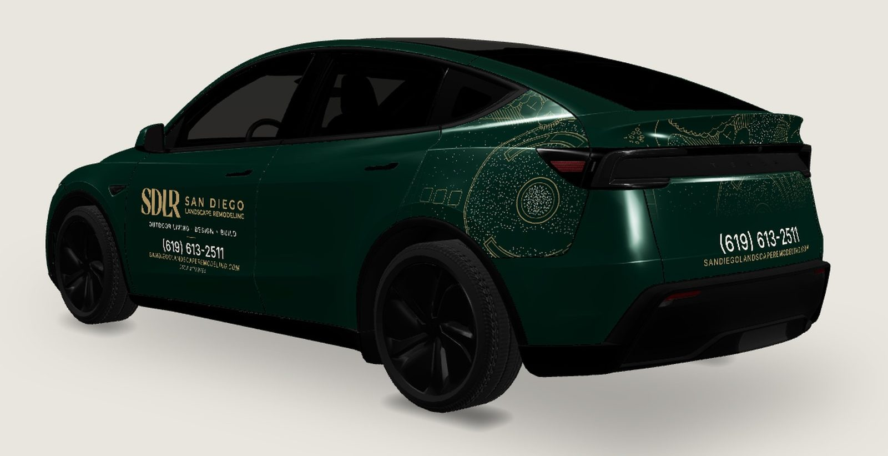
3/4 rear. (The small type softens in this projection; the print file is sharp.)
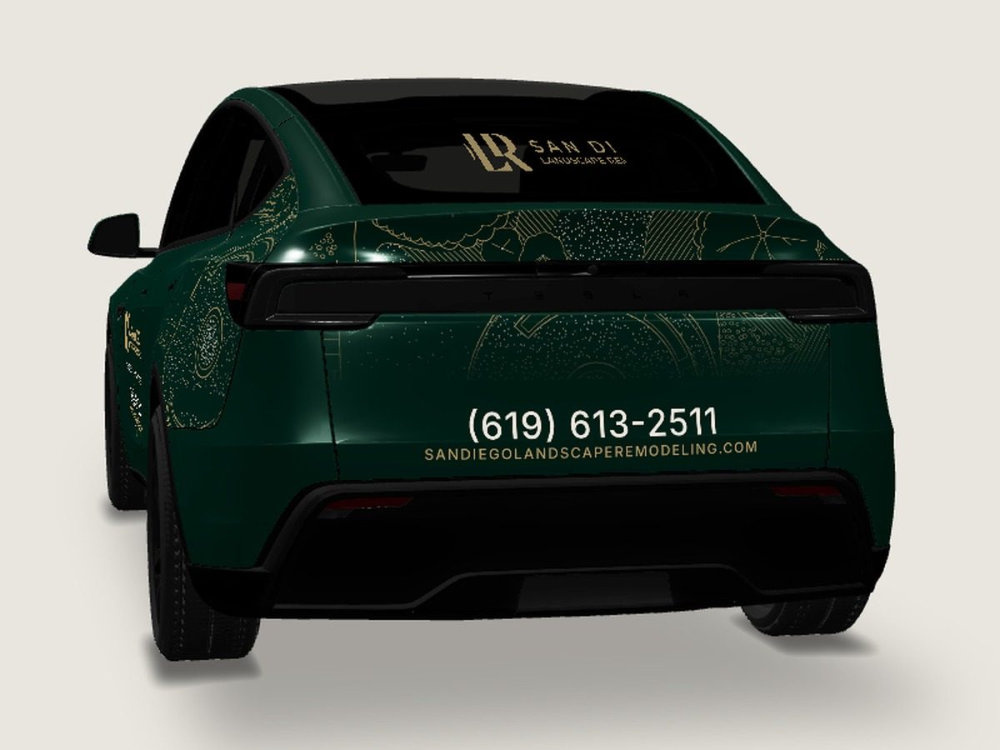
Rear.
The flat lay
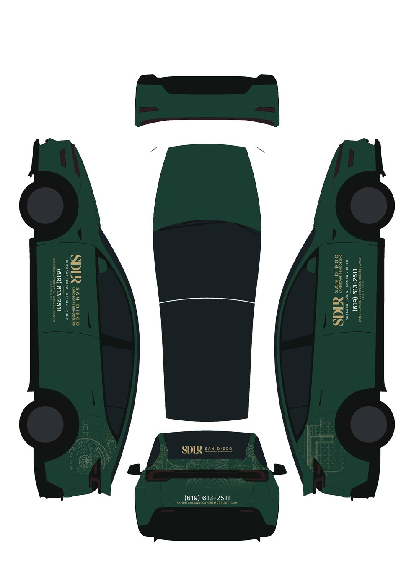
The design, flat, at 1:10: what the wrap shop prints from.
Per-side proofs
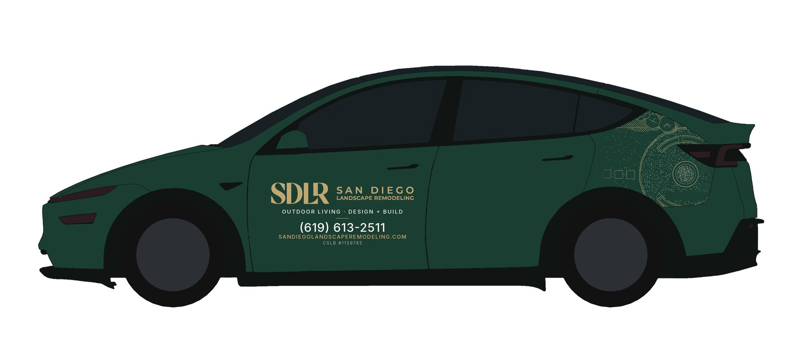
Driver side.
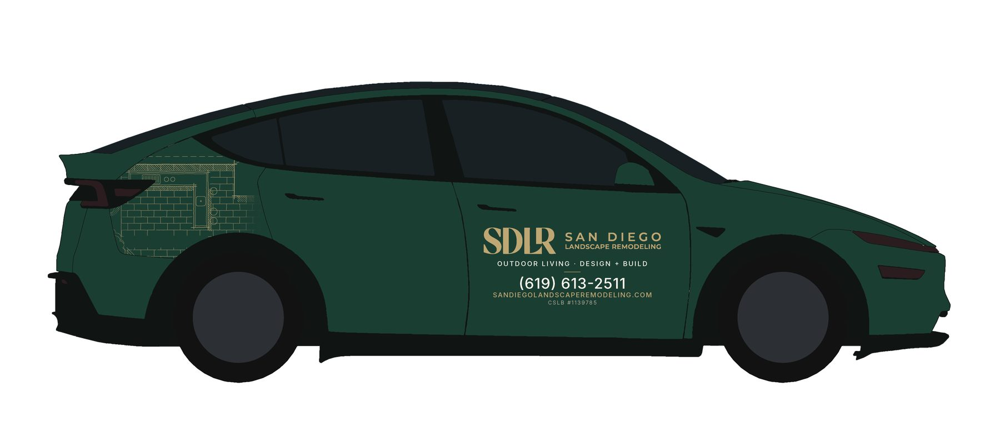
Passenger side.
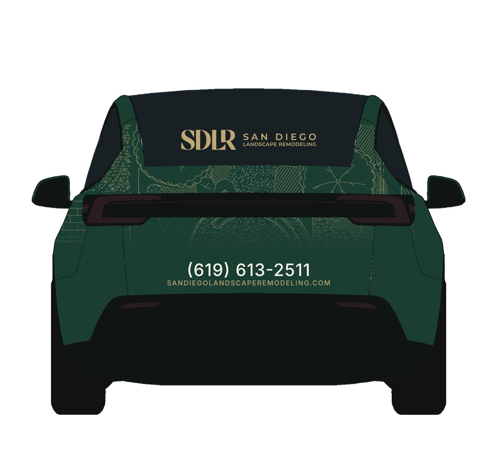
Rear.
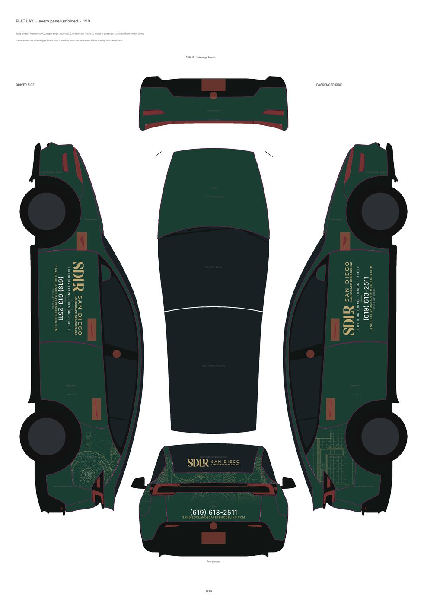
Flat lay with keep-clear zones. The door type clears the handle zone by 0.4 in.
What's on the car
Car
2025 Tesla Model Y Premium AWD, the new Juniper body, with black 19 in aero wheel covers
Body
Metallic racing-green film with visible flake, gloss (Inozetek MSG111 is the reference)
The site plan in bold gold line art at 90%, fading out toward the tail lights; rear doors clean
Rear glass
Horizontal logo, ~26 in, metallic gold cut vinyl
Liftgate
(619) 613-2511 in cream, 2.4 in, over the website in metallic gold
Before it prints
Fix the licence name: CSLB lists "San Diego Landscaping Remodeling"; the car says "Landscape". Mike corrects the record first.
Samples on the car in daylight: an MSG111 swatch, a printed sample on IJ180mC, and metallic gold vinyl samples next to the brand gold.
Ask the shop to quote wrapping the door jambs: the car is grey underneath, and unwrapped jambs show every time a door opens.
Measure every panel before cutting.
Working files (layered .ai, print PDF at 1:10, proof PDF, README) live in Drive:
02 Clients/san-diego-landscape-remodeling/Vehicle/wrap-design/2026-11-21-v6/ (versions 1 to 5 kept beside it)